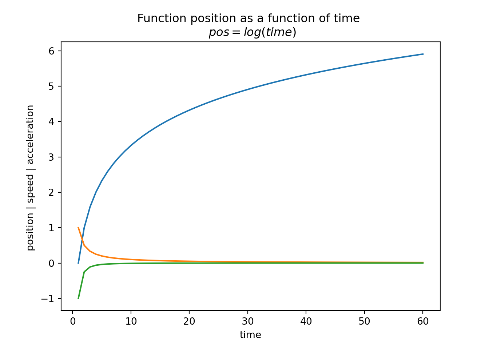
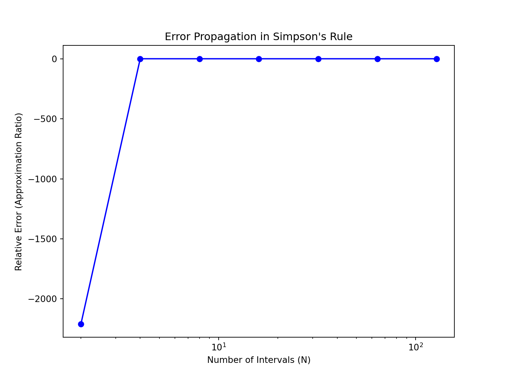
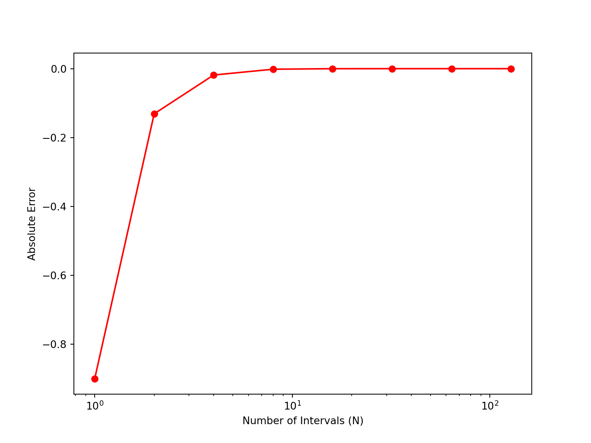
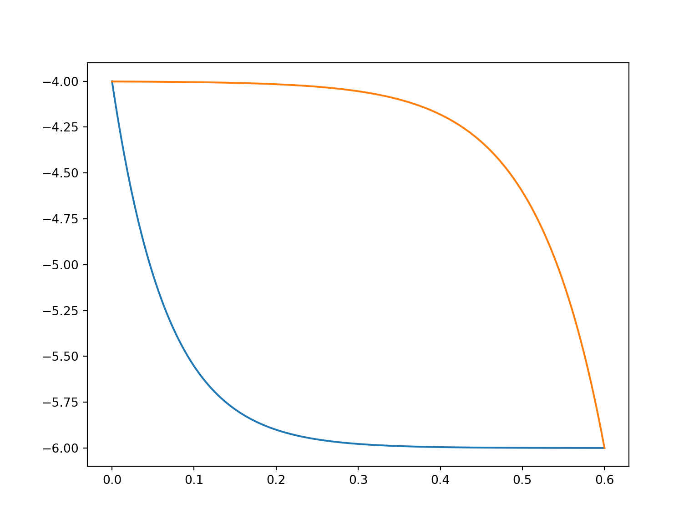
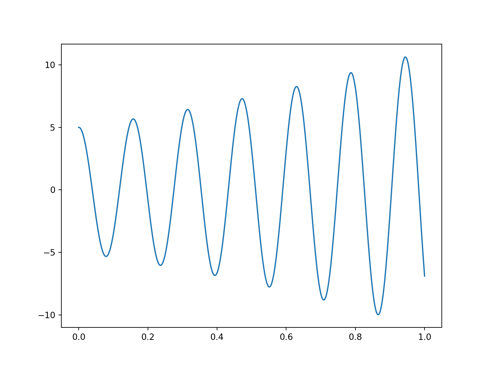
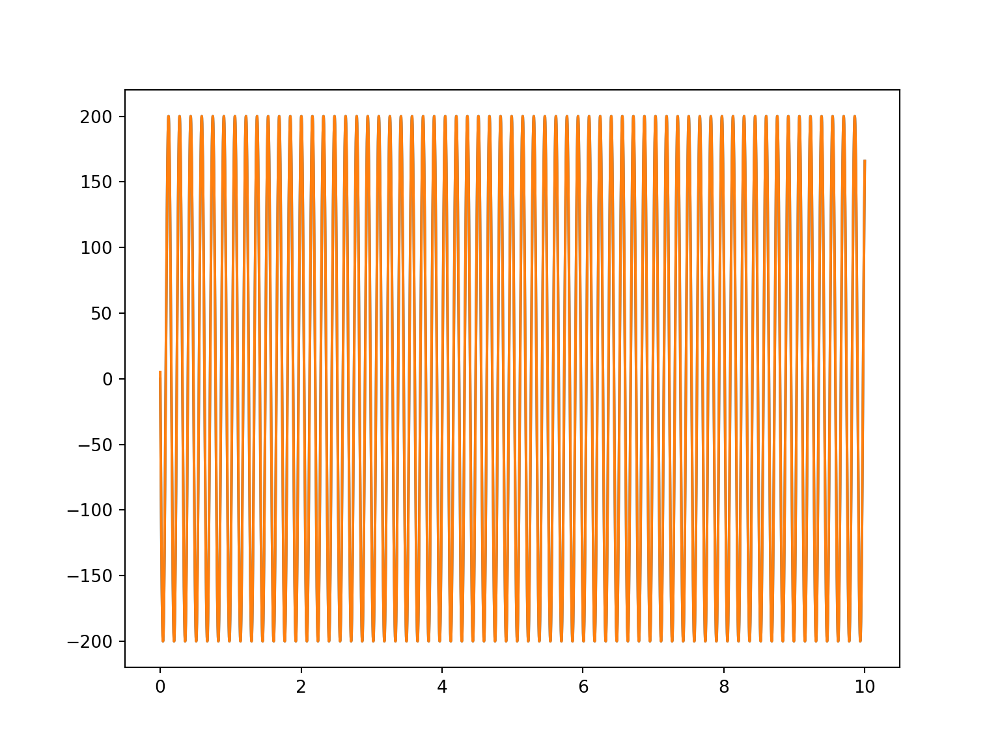

#|echo: false
import numpy as np
import matplotlib.pyplot as plt
#plt.ion()Numerical Methods
Numerical differentiation
While differentiation is easier for humans than Integration it is the other way around for computers. Since integration is basically summation, numerical differentiation builds upon small differnences
Method of finite differences
Finite differences are used in many numerical techniques. Sometimes there is no expression for the function, only its values on a grid. The idea is to use Taylor series expansion, backwards and forwards, with different step sizes, to obtain the derivative of the desired order (with less or more precision):
\[ f(x+h) = f(x) + hf'(x) + \frac{h^2}{2!}f''(x)+\frac{h³}{3!}f'''(x)+ … \]
\[ f(x+h) = \sum_{n=1}^{N} \frac{h^n}{n!}f^{n}(x) \]
\[
f(x-h) = \sum_{n=2}^{N} \frac{h^n}{n!}f^n(x)- \frac{h^{n+1}}{(n+1)!}f^{n+1}(x)
\] \[
f(x+2h) = \sum_{n=0}^{N} \frac{2h^n}{2n!}f^n(x)
\] \[
f(x-2h) = \sum_{n=2}^{N} \frac{2h^n}{n!}f^n(x)- \frac{2h^{n+1}}{(n+1)!}f^{n+1}(x) \\
\]
Primary approximation of central differencials
\[ f'(x) = \frac{f(x+h)-f(x-h)}{2h} +O(h²) \\ \]
\[ f''(x) = \frac{f(x+h)-2f(x)+f(x-h)}{h²} + O(h^2) \\ \]
\[ f'''(x) = \frac{f(x+2h)-2f(x+h)+2f(x-h)-f(x-2h)}{2h} +O(h²) \\ \]
\[ f^{(4)}(x) = \frac{f(x+2h)-4f(x+h)+6f(x)-4f(x-h)+f(x-2h)}{h⁴} + O(h^2) \\ \]
\[ eq:\\ \]
\[ h^4 f^{(4)}(x) +O(h^6)= f(x+2h)-4f(x+h)+6f(x)-4f(x-h)+f(x-2h) \]
By adding and subtracting the forward and backward expansions, some terms can be eliminated. The different derivatives are thus obtained, with precision up to a certain order.
In the following example, even or odd terms are eliminated in the order of the derivatives.
f = lambda x : np.log2(x)
df = lambda x : 1/x
dff = lambda x : -1/x**2
x = np.linspace(1,60,60)
#plt.close()
plt.plot(x,f(x),x,df(x),x,dff(x))
plt.title("Function position as a function of time \n $pos = log(time)$")
plt.xlabel("time")
plt.ylabel("position | speed | acceleration ")
plt.show()
a = [(f(x+0.5)-f(x))/0.5 for x in x]
a2 = [(f(x+0.5)-f(x-0.5))/2*0.5 for x in x]
a4 = [(-f(x+2*0.5)+8*f(x+0.5)-8*f(x-0.5)+f(x-2*0.5))/12*0.5 for x in x]
#plt.close()<string>:1: RuntimeWarning: divide by zero encountered in log2plt.plot(x,df(x),x,a,x,a2, x,a4)
plt.title("approximation of acceleration function df")
plt.show()
f = lambda x: np.sin(x)
domain = np.arange(0,3*np.pi,0.01)
N_inter = 100
h = (max(domain)-min(domain)) / N_inter
y = [f(x) for x in domain]
# first derivative
## forwards
f1f = lambda f,x,h : (-3*f(x[0])+4*f(x[1])-f(x[2])) / 2*h
## backwards
f1b = lambda f,x,h : (-3*f(x[0])+4*f(x[-1])-f(x[-2])) / 2*h
# second Derivative forward
f2f = lambda f,x,h : (f(x[0])-2*f(x[1])+f(x[2])) / h**2
# second Derivative backward
f2f = lambda f,x,h : (f(x[0])-2*f(x[1])+f(x[2])) / h**2
## forwards
f1f = lambda f,x,h : (-3*f(x)+4*f(x+h)-f(x+2*h)) / 2*h
## backwards
f1b = lambda f,x,h : (-3*f(x[0])+4*f(x[-1])-f(x[-2])) / 2*h
# second Derivative forward
f2f = lambda f,x,h : (f(x[0])-2*f(x[1])+f(x[2])) / h**2
# second Derivative backward
f2f = lambda f,x,h : (f(x[0])-2*f(x[1])+f(x[2])) / h**2y[1:-1][0.009999833334166664, 0.01999866669333308, 0.02999550020249566, 0.03998933418663416, 0.04997916927067833, 0.059964006479444595, 0.06994284733753277, 0.0799146939691727, 0.08987854919801104, 0.09983341664682815, 0.10977830083717481, 0.11971220728891936, 0.12963414261969486, 0.1395431146442365, 0.14943813247359922, 0.15931820661424598, 0.16918234906699603, 0.17902957342582418, 0.18885889497650057, 0.19866933079506122, 0.20845989984609956, 0.21822962308086932, 0.2279775235351884, 0.23770262642713458, 0.24740395925452294, 0.2570805518921551, 0.26673143668883115, 0.27635564856411376, 0.28595222510483553, 0.29552020666133955, 0.3050586364434435, 0.31456656061611776, 0.32404302839486837, 0.3334870921408144, 0.3428978074554514, 0.35227423327508994, 0.361615431964962, 0.3709204694129827, 0.3801884151231614, 0.3894183423086505, 0.39860932798442295, 0.40776045305957015, 0.41687080242921076, 0.4259394650659996, 0.43496553411123023, 0.4439481069655198, 0.45288628537906833, 0.4617791755414829, 0.470625888171158, 0.479425538604203, 0.4881772468829075, 0.49688013784373675, 0.5055333412048469, 0.5141359916531132, 0.5226872289306592, 0.5311861979208834, 0.5396320487339693, 0.5480239367918736, 0.5563610229127838, 0.5646424733950354, 0.5728674601004813, 0.5810351605373051, 0.5891447579422695, 0.5971954413623921, 0.6051864057360395, 0.6131168519734338, 0.6209859870365597, 0.6287930240184686, 0.636537182221968, 0.6442176872376911, 0.6518337710215366, 0.6593846719714731, 0.6668696350036979, 0.674287911628145, 0.6816387600233341, 0.6889214451105513, 0.6961352386273567, 0.7032794192004101, 0.7103532724176078, 0.7173560908995228, 0.7242871743701426, 0.7311458297268959, 0.7379313711099628, 0.7446431199708593, 0.7512804051402927, 0.757842562895277, 0.7643289370255051, 0.7707388788989693, 0.7770717475268238, 0.7833269096274834, 0.7895037396899505, 0.795601620036366, 0.8016199408837772, 0.8075581004051143, 0.8134155047893737, 0.8191915683009983, 0.8248857133384501, 0.8304973704919705, 0.8360259786005205, 0.8414709848078965, 0.8468318446180152, 0.852108021949363, 0.8572989891886034, 0.8624042272433384, 0.867423225594017, 0.8723554823449863, 0.8772005042746817, 0.8819578068849475, 0.8866269144494873, 0.8912073600614354, 0.8956986856800476, 0.9001004421765051, 0.904412189378826, 0.9086334961158833, 0.9127639402605211, 0.9168031087717669, 0.9207505977361357, 0.9246060124080203, 0.9283689672491666, 0.9320390859672263, 0.9356160015533859, 0.9390993563190676, 0.9424888019316975, 0.945783999449539, 0.9489846193555862, 0.9520903415905158, 0.9551008555846923, 0.9580158602892249, 0.9608350642060727, 0.963558185417193, 0.966184951612734, 0.9687151001182652, 0.9711483779210446, 0.9734845416953194, 0.9757233578266591, 0.9778646024353163, 0.9799080613986142, 0.9818535303723598, 0.9837008148112766, 0.9854497299884603, 0.9871001010138504, 0.9886517628517197, 0.9901045603371778, 0.9914583481916864, 0.9927129910375885, 0.9938683634116449, 0.9949243497775809, 0.99588084453764, 0.9967377520431434, 0.9974949866040544, 0.9981524724975481, 0.998710143975583, 0.999167945271476, 0.9995258306054791, 0.999783764189357, 0.9999417202299663, 0.9999996829318346, 0.9999576464987401, 0.9998156151342908, 0.9995736030415051, 0.9992316344213905, 0.998789743470524, 0.9982479743776325, 0.9976063813191737, 0.9968650284539189, 0.9960239899165367, 0.9950833498101802, 0.994043202198076, 0.9929036510941185, 0.9916648104524686, 0.990326804156158, 0.9888897660047015, 0.9873538397007164, 0.9857191788355535, 0.9839859468739369, 0.9821543171376185, 0.9802244727880455, 0.9781966068080447, 0.9760709219825242, 0.9738476308781951, 0.9715269558223153, 0.9691091288804563, 0.9665943918332975, 0.9639829961524481, 0.9612752029752999, 0.9584712830789142, 0.955571516852944, 0.9525761942715953, 0.9494856148646305, 0.9463000876874145, 0.9430199312900105, 0.9396454736853249, 0.9361770523163061, 0.9326150140222005, 0.9289597150038693, 0.9252115207881683, 0.9213708061913954, 0.9174379552818098, 0.9134133613412252, 0.9092974268256817, 0.9050905633252009, 0.9007931915226273, 0.8964057411515598, 0.8919286509533796, 0.8873623686333755, 0.8827073508159741, 0.8779640629990781, 0.8731329795075164, 0.8682145834456126, 0.8632093666488737, 0.8581178296348089, 0.8529404815528762, 0.8476778401335698, 0.8423304316366457, 0.8368987907984977, 0.8313834607786831, 0.825784993105608, 0.8201039476213742, 0.814340892425796, 0.8084964038195901, 0.8025710662467472, 0.7965654722360865, 0.7904802223420048, 0.7843159250844198, 0.7780731968879212, 0.7717526620201257, 0.7653549525292536, 0.7588807081809218, 0.7523305763941707, 0.74570521217672, 0.7390052780594708, 0.7322314440302514, 0.7253843874668195, 0.7184647930691263, 0.7114733527908443, 0.7044107657701763, 0.6972777382599378, 0.6900749835569364, 0.6828032219306397, 0.675463180551151, 0.668055593416491, 0.6605812012792007, 0.6530407515722648, 0.6454349983343707, 0.6377647021345036, 0.6300306299958922, 0.6222335553193047, 0.6143742578057118, 0.6064535233783147, 0.5984721441039565, 0.5904309181139127, 0.5823306495240819, 0.5741721483545723, 0.5659562304487028, 0.5576837173914166, 0.5493554364271266, 0.5409722203769886, 0.5325349075556212, 0.5240443416872761, 0.5155013718214642, 0.5069068522480534, 0.49826164241183857, 0.4895666068265995, 0.48082261498864826, 0.47203054128988264, 0.4631912649303452, 0.45430566983030646, 0.44537464454187115, 0.4363990821601263, 0.4273798802338298, 0.418317940675659, 0.4092141696720173, 0.4000694775924195, 0.3908847788984522, 0.38166099205233167, 0.3723990394250553, 0.3630998472041683, 0.3537643453011427, 0.34439346725839, 0.33498815015590466, 0.32554933451756, 0.3160779642170538, 0.30657498638352293, 0.2970413513068324, 0.2874780123425444, 0.2778859258165868, 0.2682660509296179, 0.25861934966111083, 0.24894678667315256, 0.23924932921398243, 0.2295279470212642, 0.21978361222511694, 0.21001729925089915, 0.20022998472177053, 0.19042264736102704, 0.18059626789423291, 0.17075182895114532, 0.16089031496745576, 0.15101271208634384, 0.1411200080598672, 0.1312131921501838, 0.12129325503062975, 0.11136118868664958, 0.10141798631660186, 0.09146464223243675, 0.08150215176026912, 0.07153151114084326, 0.06155371742991315, 0.05156976839853464, 0.04158066243329049, 0.031587398436453896, 0.02159097572609596, 0.011592393936158275, 0.0015926529164868282, -0.008407247367148618, -0.01840630693305381, -0.02840352588360379, -0.03839790450523538, -0.04838844336841415, -0.058374143427580086, -0.06835400612104778, -0.0783270334708653, -0.0882922281826076, -0.09824859374510868, -0.10819513453010837, -0.11813085589181781, -0.12805476426637968, -0.13796586727122728, -0.14786317380431852, -0.15774569414324865, -0.16761244004421832, -0.17746242484086058, -0.18729466354290317, -0.19710817293466984, -0.20690197167339977, -0.21667508038737962, -0.22642652177388314, -0.236155320696897, -0.24586050428463702, -0.2555411020268312, -0.26519614587177337, -0.274824670323124, -0.28442571253646254, -0.2939983124155676, -0.30354151270842933, -0.3130543591029702, -0.322535900322479, -0.3319851882207341, -0.34140127787682095, -0.35078322768961984, -0.36013009947196856, -0.3694409585444771, -0.37871487382899804, -0.3879509179417303, -0.3971481672859602, -0.4063057021444168, -0.41542260677124626, -0.4244979694835826, -0.43353088275271773, -0.44252044329485246, -0.45146575216142315, -0.4603659148289983, -0.46922004128872713, -0.47802724613534286, -0.48678664865569937, -0.4954973729168449, -0.5041585478536115, -0.5127693073557238, -0.5213287903544065, -0.5298361409084934, -0.5382905082900177, -0.5466910470692872, -0.5550369171994238, -0.56332728410037, -0.5715613187423437, -0.5797381977287431, -0.5878571033784827, -0.5959172238077642, -0.6039177530112606, -0.6118578909427193, -0.6197368435949633, -0.6275538230792936, -0.6353080477042756, -0.6429987420539088, -0.6506251370651673, -0.6581864701049049, -0.6656819850461192, -0.6731109323435617, -0.680472569108694, -0.6877661591839738, -0.694990973216472, -0.7021462887308054, -0.7092313902013861, -0.7162455691239705, -0.7231881240865121, -0.7300583608392995, -0.7368555923643834, -0.7435791389442746, -0.750228328229919, -0.7568024953079282, -0.7633009827670734, -0.7697231407640244, -0.7760683270883323, -0.7823359072266528, -0.788525254426195, -0.7946357497573974, -0.8006667821758177, -0.8066177485832405, -0.8124880538879843, -0.8182771110644103, -0.8239843412116258, -0.8296091736113709, -0.8351510457850935, -0.8406094035501945, -0.8459837010754465, -0.8512734009355745, -0.8564779741650012, -0.8615969003107405, -0.8666296674844443, -0.8715757724135882, -0.8764347204918014, -0.8812060258283253, -0.8858892112966027, -0.8904838085819885, -0.8949893582285835, -0.8994054096851777, -0.9037315213503057, -0.9079672606164054, -0.9121122039130803, -0.9161659367494549, -0.920128053755624, -0.9239981587231879, -0.9277758646448755, -0.9314607937532425, -0.9350525775584494, -0.9385508568851079, -0.941955281908201, -0.9452655121880633, -0.9484812167044256, -0.951602073889516, -0.9546277716602164, -0.9575580074492711, -0.9603924882355434, -0.9631309305733167, -0.9657730606206388, -0.9683186141667072, -0.9707673366582883, -0.9731189832251739, -0.9753733187046665, -0.977530117665097, -0.9795891644283669, -0.9815502530915156, -0.9834131875473108, -0.9851777815038595, -0.9868438585032365, -0.9884112519391306, -0.9898798050735039, -0.991249371052267, -0.9925198129199632, -0.9936910036334645, -0.9947628260746756, -0.9957351730622453, -0.9966079473622855, -0.9973810616980933, -0.9980544387588794, -0.9986280112074989, -0.9991017216871848, -0.999475522827284, -0.999749377247994, -0.9999232575641008, -0.999997146387718, -0.9999710363300245, -0.9998449300020044, -0.9996188400141854, -0.999292788975378, -0.9988668094904142, -0.9983409441568876, -0.9977152455608933, -0.9969897762717695, -0.9961646088358407, -0.9952398257691626, -0.9942155195492713, -0.9930917926059354, -0.9918687573109126, -0.9905465359667132, -0.9891252607943698, -0.9876050739202153, -0.9859861273616704, -0.9842685830120416, -0.9824526126243325, -0.9805383977940689, -0.9785261299411385, -0.9764160102906497, -0.9742082498528091, -0.9719030694018208, -0.9695006994538088, -0.967001380243766, -0.9644053617015305, -0.9617129034267934, -0.9589242746631385, -0.9560397542711181, -0.9530596307003675, -0.9499842019607608, -0.9468137755926089, -0.9435486686359066, -0.9401892075986283, -0.9367357284240789, -0.9331885764572976, -0.9295481064105251, -0.9258146823277321, -0.9219886775482162, -0.918070474669267, -0.914060465507907, -0.9099590510617106, -0.9057666414687044, -0.9014836559663548, -0.8971105228496424, -0.8926476794282346, -0.8880955719827542, -0.8834546557201531, -0.8787253947281899, -0.8739082619290224, -0.8690037390319161, -0.8640123164850744, -0.858934493426592, -0.8537707776345433, -0.8485216854762041, -0.8431877418564168, -0.8377694801650978, -0.8322674422239013, -0.8266821782320357, -0.821014246711247, -0.8152642144499634, -0.8094326564466194, -0.8035201558521553, -0.7975273039117042, -0.791454699905466, -0.7853029510887806, -0.7790726726314031, -0.7727644875559871, -0.7663790266757844, -0.759916928531561, -0.7533788393277465, -0.7467654128678123, -0.7400773104888944, -0.7333152009956565, -0.7264797605934131, -0.7195716728205075, -0.7125916284799615, -0.7055403255703919, -0.6984184692162135, -0.6912267715971264, -0.6839659518769007, -0.6766367361314569, -0.669239857276262, -0.6617760549930369, -0.6542460756557914, -0.6466506722561834, -0.6389906043282237, -0.6312666378723208, -0.6234795452786853, -0.6156301052500863, -0.6077191027239858, -0.5997473287940438, -0.5917155806310094, -0.5836246614030073, -0.5754753801952172, -0.5672685519289686, -0.5590049972802488, -0.5506855425976376, -0.5423110198196698, -0.5338822663916443, -0.5254001251818793, -0.5168654443974288, -0.5082790774992584, -0.49964188311690244, -0.49095472496260095, -0.48221847174493154, -0.47343399708193507, -0.46460217941375737, -0.4557239019148047, -0.44680005240543, -0.4378315232631469, -0.4288192113333959, -0.4197640178398589, -0.41066684829434086, -0.4015286124062146, -0.39235022399145386, -0.38313260088125134, -0.373876664830236, -0.3645833414243013, -0.35525355998804264, -0.34588825349182883, -0.3364883584585042, -0.32705481486974064, -0.31758856607203484, -0.3080905586823781, -0.2985617424935936, -0.2890030703793611, -0.27941549819892586, -0.26979998470151617, -0.26015749143046807, -0.2504889826270749, -0.2407954251341592, -0.23107778829939224, -0.22133704387835867, -0.21157416593738504, -0.2017901307561289, -0.19198591672995502, -0.18216250427209502, -0.17232087571561025, -0.1624620152151542, -0.15258690864856114, -0.14269654351825772, -0.13279190885251674, -0.12287399510655005, -0.11294379406346737, -0.10300229873509785, -0.0930505032626889, -0.0830894028174964, -0.07311999350126308, -0.06314327224661277, -0.053160236717356125, -0.04317188520872868, -0.03317921654755682, -0.02318322999237945, -0.013184925133521251, -0.0031853017931379904, 0.006814640074770176, 0.016813900484349713, 0.026811479517893238, 0.03680637742582692, 0.04679759472668989, 0.05678413230707805, 0.06676499152155635, 0.07673917429251892, 0.08670568321000133, 0.09666352163141724, 0.10661169378122355, 0.11654920485049364, 0.1264750610964027, 0.13638826994159764, 0.14628784007345494, 0.1561727815432119, 0.1660421058649572, 0.175894826114484, 0.18572995702797787, 0.19554651510054424, 0.2053435186845546, 0.21511998808781552, 0.2248749456715337, 0.2346074159480808, 0.24431642567853773, 0.2540010039700231, 0.2636601823727784, 0.27329299497701326, 0.28289847850949296, 0.2924756724298697, 0.30202361902673236, 0.3115413635133787, 0.32102795412328977, 0.3304824422053109, 0.3399038823185127, 0.3492913323267357, 0.35864385349280037, 0.36796051057238466, 0.3772403719075444, 0.38648250951987934, 0.3956859992033308, 0.4048499206165983, 0.413973357375178, 0.42305539714299684, 0.43209513172364716, 0.44109165715120235, 0.4500440737806176, 0.4589514863776903, 0.4678130042085843, 0.4766277411288995, 0.48539481567229026, 0.49411335113860816, 0.5027824756815727, 0.5114013223959524, 0.5199690294042587, 0.5284847399429308, 0.5369476024480118, 0.545356770640302, 0.5537114036099907, 0.562010665900743, 0.5702537275932467, 0.5784397643882001, 0.5865679576887464, 0.5946374946823286, 0.6026475684219723, 0.6105973779069791, 0.618486128163024, 0.6263130303216559, 0.6340773016991814, 0.6417781658749337, 0.6494148527689112, 0.6569865987187891, 0.664492646556282, 0.6719322456828621, 0.6793046521448148, 0.6866091287076385, 0.6938449449297637, 0.7010113772355987, 0.7081077089878838, 0.7151332305593578, 0.7220872394037184, 0.7289690401258765, 0.7357779445514936, 0.7425132717958018, 0.7491743483316894, 0.7557605080570543, 0.7622710923614112, 0.7687054501917558, 0.775062938117667, 0.78134292039565, 0.787544769032711, 0.7936678638491531, 0.7997115925405982, 0.8056753507392133, 0.8115585420741488, 0.8173605782311729, 0.8230808790115055, 0.8287188723898353, 0.8342739945715234, 0.8397456900489799, 0.8451334116572173, 0.8504366206285644, 0.8556547866465439, 0.8607873878989016, 0.8658339111297899, 0.8707938516910911, 0.8756667135928826, 0.8804520095530344, 0.8851492610459383, 0.8897579983503596, 0.8942777605964088, 0.8987080958116269, 0.9030485609661848, 0.907298722017184, 0.9114581539520613, 0.9155264408310896, 0.9195031758289707, 0.9233879612755189, 0.927180408695427, 0.9308801388471136, 0.934486781760646, 0.9379999767747389, 0.9414193725728183, 0.9447446272181541, 0.9479754081880525, 0.951111392407109, 0.9541522662795148, 0.9570977257204173, 0.9599474761863261, 0.9627012327045701, 0.9653587199017918, 0.9679196720314865, 0.970383833000575, 0.9727509563950137, 0.9750208055044363, 0.977193153345823, 0.9792677826862, 0.9812444860643621, 0.9831230658116188, 0.9849033340715608, 0.9865851128188459, 0.9881682338770004, 0.989652538935238, 0.9910378795642898, 0.9923241172312475, 0.9935111233134158, 0.9945987791111761, 0.9955869758598548, 0.9964756147406006, 0.9972646068902659, 0.9979538734102932, 0.998543345374605, 0.999032963836496, 0.9994226798345279, 0.999712454397426, 0.9999022585479752, 0.9999920733059188, 0.9999818896898556, 0.999871708718139, 0.9996615414087742, 0.999351408778317, 0.998941341839772, 0.9984313815994914, 0.9978215790530743, 0.997111995180267, 0.9963027009388656, 0.9953937772576199, 0.9943853150281404, 0.9932774150958098, 0.992070188249698, 0.9907637552114835, 0.9893582466233818, 0.9878538030350801, 0.9862505748896837, 0.9845487225086711, 0.9827484160758618, 0.9808498356203995, 0.9788531709987474, 0.9767586218757036, 0.974566397704435, 0.972276717705532, 0.9698898108450863, 0.9674059158117949, 0.9648252809930908, 0.9621481644503063, 0.9593748338928642, 0.9565055666515091, 0.9535406496505743, 0.9504803793792889, 0.94732506186213, 0.9440750126282197, 0.9407305566797731, 0.9372920284595976, 0.9337597718176507, 0.9301341399766526, 0.9264154954967662, 0.9226042102393402, 0.9187006653297247, 0.9147052511191576, 0.9106183671457304, 0.906440422094434, 0.9021718337562933, 0.8978130289865844, 0.893364443662152, 0.888826522637821, 0.8841997197019127, 0.8794844975308649, 0.8746813276429652, 0.869790690351199, 0.8648130747152218, 0.8597489784924482, 0.8545989080882804, 0.8493633785054673, 0.8440429132926041, 0.8386380444917783, 0.833149312585366, 0.827577266441984, 0.8219224632616022, 0.8161854685198283, 0.8103668559113548, 0.8044672072925937, 0.7984871126234903, 0.7924271699085284, 0.7862879851369292, 0.7800701722220543, 0.7737743529400123, 0.7674011568674873, 0.7609512213187744, 0.7544251912820534, 0.7478237193548898, 0.7411474656789752, 0.7343970978741133, 0.7275732909714597, 0.7206767273460168, 0.7137080966484024, 0.706668095735878, 0.699557428602668, 0.6923768063095604, 0.6851269469128006, 0.6778085753922868, 0.6704224235790722, 0.662969230082182, 0.6554497402147573, 0.6478647059195176, 0.6402148856935713, 0.6325010445125663, 0.6247239537541924, 0.6168843911210448, 0.6089831405628535, 0.6010209921980904, 0.5929987422349551, 0.5849171928917617, 0.5767771523167085, 0.5685794345070696, 0.5603248592277947, 0.5520142519295329, 0.5436484436660884, 0.5352282710113162, 0.5267545759754634, 0.5182282059209752, 0.5096500134777504, 0.5010208564578846, 0.49234159776988917, 0.4836131053324, 0.47483625198738716, 0.4660119154128711, 0.45714097803515424, 0.4482243269405849, 0.43926285378684055, 0.4302574547137687, 0.42120903025377215, 0.4121184852417566, 0.40298672872464775, 0.39381467387048763, 0.38460323787711825, 0.3753533418804611, 0.366065910862411, 0.3567418735583286, 0.34738216236417424, 0.3379877132432676, 0.32855946563269217, 0.3190983623493521, 0.3096053494956915, 0.30008137636508325, 0.2905273953469072, 0.2809443618313018, 0.27133323411363275, 0.2616949732986626, 0.252030543204441, 0.24234091026592378, 0.23262704343833002, 0.22288991410024592, 0.2131304959564945, 0.20334976494075557, 0.19354869911798017, 0.183728278586583, 0.17388948538043356, 0.1640333033706535, 0.15416071816723032, 0.14427271702045727, 0.1343702887222073, 0.1244544235070617, 0.11452611295327708, 0.10458634988363526, 0.09463612826616005, 0.08467644311472142, 0.07470829038953478, 0.06473266689756589, 0.05475057019284918, 0.04476299847674028, 0.03477095049808608, 0.024775425453357765, 0.014777422886730236]Second deivative of euler
\[ f(x) = e^{-x} \ f'(x) = -e^{-x} \ f''(x) = e^{-x}, … \]
Numerical Integration
Trapezoidal integration method
def trapez(f,a,b,Ninterv):
h = (b-a) / Ninterv
s = a
I = (f(a)+f(b))/2
for i in range(Ninterv-1):
s += h
I += f(s)
return h*I\[ I_1= \int_0^\pi \sin²(x)dx \]
sine² of x: from 0 to \(\pi\)
f = lambda x : np.sin(x)**2
trapez(f,0,np.pi,1000)1.5707963267949103Shiny- live
(gets compiled to WASM - has to be in separte env) takes time to load
#| standalone: true
#| viewerHeight: 365
import matplotlib.pyplot as plt
from matplotlib.patches import Rectangle
import numpy as np
from shiny import App, render, ui
def trapez(f,a,b,N_iter):
h = (b-a) / N_iter
s = a
I = (f(a)+f(b))/2
for i in range(N_iter-1):
s += h
I += f(s)
return h*I
def simpson(f,a,b,N_iter):
h = (b-a) / N_iter
I = f(a) + f(b)
x = a
for i in range(N_iter-1):
x += h
I += (2+2*((i+1)%2))*f(x)
I *= h/3
return I
f = lambda x : np.sin(x)**2
app_ui = ui.page_fluid(
ui.layout_sidebar(
ui.panel_sidebar(
ui.input_slider("n", "Number of triangles", 0, 100, 20),
ui.input_slider("I","Interval",
-np.pi*2,np.pi*2,
[-np.pi,np.pi],
step=0.05),
ui.input_select("f", "select function",{
"lambda x: np.sqrt(1-x**2)": "sqrt(1-x**2)",
"lambda x : x**2":"x**2",
"lambda x : np.sin(x)**2": "sin(x)**2"
}),
),
ui.panel_main(
ui.output_plot("NumIntplot"),
ui.output_text("txt"),
),
),
)
def server(input, output, session):
@output
@render.plot(alt="Numerical integration")
def NumIntplot():
a,b = input.I()
N_iter = input.n()
h = np.linspace(a,b,N_iter)
x = np.linspace(a,b,400)
f = eval(input.f())
tI = trapez(f,a,b,N_iter)
sI = simpson(f,a,b,N_iter)
fig, ax = plt.subplots()
ax.plot(x,f(x))
ax.plot(h,f(h),drawstyle='steps-mid')
ax.scatter(h,f(h))
ax.fill_between(h,f(h), alpha=0.3,step="mid")
ax.text(-0.5, 0.035,f"Trapez: {tI:4.4f}\nSimpson: {sI:4.4f}")
app = App(app_ui, server)
\[ I_2 = \int_{-1}^1 \sqrt{1-x²dx} \]
f = lambda x: np.sqrt(1-x**2)
trapez(f, -1,1,1000)1.5707437385010707\[ I_3 = \int_0^1 \int_0^1 \int_0^1 x²yz³ \ dxdydz \]
\[ I_3=\int_0^1 dx x² \int_0^1 dyy\int_0^1 dzz³ \]
# use lambdas:
f = lambda x,y,z : x**2 * y * z**3
trapez_value=np.prod(
list(
map(
lambda I: trapez(I,0,1,100),
[lambda x: f(x,1,1),lambda y : f(1,y,1),lambda z : f(1,1,z)]
)
)
)# or split into integrals
fx = lambda x : x**2
fy = lambda y : y
fz = lambda z : z**3
trapez(fx,0,1,100) * trapez(fy,0,1,100) * trapez(fz,0,1,100)0.041672916875000146Simpsons Method
of 1/3 ds
def simpson(f,a,b,N_iter):
h = (b-a) / N_iter
I = f(a) + f(b)
x = a
for i in range(N_iter-1):
x += h
I += ( 2 + 2*((i+1)%2)) * f(x)
I *= h/3
return Iapplied to ex 1:
\[\int_{a}^bf_{in}(x)dx+\int_{b}^af_{ex}(x)dx\] \[ f_{in}(x)=\alpha+\beta(1-e^{-\gamma x})\\ f_{ex}(x) = a' +\beta'e^{\gamma'(x-x_0)} \]
import matplotlib.pyplot as plt
import numpy as np
# inspiration phase
# α = −4; β = −2; γ = 15;
fin = lambda x :-4-2*(1-np.exp(-15*x))
# expiration phase:
# α′ = −4; β′ = −2; γ′ = 12; x0 = 0.6;
fex = lambda x: -4-2*np.exp(12*(x-0.6))
# integrate over one cycle:
a = 0.0; b = 0.6; n_value = 50
wc = simpson(fin,a,b,n_value)+simpson(fex,b,a,n_value)
print(f'From Simpson integration with:\na = {a}, b = {b}, and {n_value} intervals::\n• Work per cycle:\n ~ {wc} J\n• Work per day:\n ~ {wc*15*1440} J')From Simpson integration with:
a = 0.0, b = 0.6, and 50 intervals::
• Work per cycle:
~ -0.9001397142393341 J
• Work per day:
~ -19443.01782756962 J
# Define a range of N values (number of intervals)
N_values = [2**n for n in range(8)]
# Store approximations for different N values:
approx = []
for n_value in N_values:
approximation = simpson(fin,a,b,n_value)+simpson(fex,b,a,n_value)
approx.append(approximation)
# Relative errors (error ratio between consecutive approximations)
relative_errors = [approx[i] / approx[i - 1] for i in range(1, len(approx))]
# Absoulte Errors
ABSerrors = [-0.900141-approx[i] for i in range(len(approx))]
# Plotting error propagation
plt.figure(figsize=(8, 6))
plt.plot(N_values[1:], relative_errors, marker='o', linestyle='-', color='blue')
plt.xscale('log')
#plt.yscale('log')
plt.xlabel('Number of Intervals (N)')
plt.ylabel('Relative Error (Approximation Ratio)')
plt.title('Error Propagation in Simpson\'s Rule')
plt.grid(False)
plt.show()
plt.figure(figsize=(8, 6))
plt.plot(N_values, ABSerrors, marker='o', linestyle='-', color='red')
plt.xscale('log')
#plt.yscale('log')
plt.xlabel('Number of Intervals (N)')
plt.ylabel('Absolute Error')
plt.grid(False)
plt.show()
recreation of the breath cycle plot
P_in = np.zeros(1000)
P_ex = np.zeros(1000)
V = np.linspace(0.0,0.6,1000)
for i,x in enumerate(V):
P_in[i] = fin(x)
P_ex[i] = fex(x)
plt.clf()
plt.plot(V,P_in,V,P_ex)
plt.show()
applied to the triple Integral
simpson(fx,0,1,100) * simpson(fy,0,1,100) * simpson(fz,0,1,100)0.04166666666666682f = lambda x,y,z : x**2 * y * z**3
simpson_value=np.prod(
list(
map(
lambda I: simpson(I,0,1,100),
[lambda x: f(x,1,1),lambda y : f(1,y,1),lambda z : f(1,1,z)]
)
)
)print(f'Simpson : {simpson_value:2.6f} \n Trapez : {trapez_value:2.6f}')Simpson : 0.041667
Trapez : 0.041673Check how fast Simpsons and the triagle Method converges
Number_of_iterations = [ 2**n for n in range(0,7) ]
f = lambda x : x**2 ; a = 0 ; b = 1 # true value I = 1/3
for N in Number_of_iterations:
err_trap = (trapez(f,a,b,N)-(1/3))
err_simpson = (simpson(f,a,b,N) -(1/3))
print(f'{N} iterations:\n Trapez error {err_trap:2.5f}\n Simpson Error {err_simpson:2.5f}\n---')
1 iterations:
Trapez error 0.16667
Simpson Error 0.00000
---
2 iterations:
Trapez error 0.04167
Simpson Error 0.00000
---
4 iterations:
Trapez error 0.01042
Simpson Error 0.00000
---
8 iterations:
Trapez error 0.00260
Simpson Error 0.00000
---
16 iterations:
Trapez error 0.00065
Simpson Error 0.00000
---
32 iterations:
Trapez error 0.00016
Simpson Error 0.00000
---
64 iterations:
Trapez error 0.00004
Simpson Error 0.00000
---Romberg integration Method
Function
def romberg(f,a,b,k,method):
if method not in [simpson,trapez]:
print("please define a valid method")
return
# init
# For trapezoidal
# estimates it is necessary to change the powers 4^j → 4^(j−1)
q = 0 if method == simpson else 1 # q flag for method
N_iter = np.array([(2**_) for _ in range(k)]) # number of iterations
I = np.array([method(f,a,b,_) for _ in N_iter]) # first column of Integration matrix
J = np.zeros((k,k))
E = np.zeros((k,k))
J[:,0] = I
E[0,0] = 0
for i in range(1,k):
for j in range(1,i+1):
J[i,j] = ((4**(j+q))*J[i,j-1] - J[i-1,j-1]) / ((4**(j+q))-1)
E[i,j] = (J[i,j] - J[i-1,j]) / (4**(j+1+q) -1 )
return J,E
Test
f = lambda x : x**2 + 10*x**3
J,E = romberg(f,0,10,5,simpson)
print(J)[[33666.66666667 0. 0. 0.
0. ]
[25333.33333333 22555.55555556 0. 0.
0. ]
[25333.33333333 25333.33333333 25518.51851852 0.
0. ]
[25333.33333333 25333.33333333 25333.33333333 25330.39388595
0. ]
[25333.33333333 25333.33333333 25333.33333333 25333.33333333
25333.34486058]]print(E)[[ 0.00000000e+00 0.00000000e+00 0.00000000e+00 0.00000000e+00
0.00000000e+00]
[ 0.00000000e+00 1.50370370e+03 0.00000000e+00 0.00000000e+00
0.00000000e+00]
[ 0.00000000e+00 1.85185185e+02 4.05055850e+02 0.00000000e+00
0.00000000e+00]
[ 0.00000000e+00 0.00000000e+00 -2.93944738e+00 9.93348780e+01
0.00000000e+00]
[ 0.00000000e+00 0.00000000e+00 0.00000000e+00 1.15272446e-02
2.47637780e+01]]Gauss–Legendre quadrature
Function of an integer approximationg pi
\[ \int_{-1}^{1} \frac{2}{1+x²}dx = \pi \]
steps:
- Interpolate Integral to [-1,1] by mapping / scaling
- choose N points
- lookup coefs -> w,k
- compute function on those points `
WeightsandAbscissae = {
2: {
"w": [1.0, 1.0],
"x": [-0.5773502691896257, 0.5773502691896257]
},
3: {
"w": [0.8888888888888888, 0.5555555555555556,0.5555555555555556],
"x": [0.0, -0.7745966692414834,0.7745966692414834]
},
4: {
"w": [0.6521451548625461, 0.6521451548625461,0.3478548451374538,0.3478548451374538],
"x": [-0.3399810435848563, 0.3399810435848563,-0.8611363115940526,0.8611363115940526]
},
5: {
"w": [0.5688888888888889, 0.4786286704993665,0.4786286704993665,0.2369268850561891,0.2369268850561891],
"x": [0.0, -0.5384693101056831,0.5384693101056831,-0.9061798459386640,0.9061798459386640]
},
6: {
"w": [0.3607615730481386, 0.3607615730481386,0.4679139345726910,0.4679139345726910,0.1713244923791704,0.1713244923791704],
"x": [0.6612093864662645, -0.6612093864662645,-0.2386191860831969,0.2386191860831969,-0.9324695142031521,0.9324695142031521]
}
}WeightsandAbscissae[2]["w"][1.0, 1.0]WeightsandAbscissae[2]["x"][-0.5773502691896257, 0.5773502691896257]def Gaussq(f,a,b,N):
# linear transformation
alpha = (b-a)/2
beta = (a+b)/2
# obtain w and x
w = WeightsandAbscissae[N]["w"]
x = WeightsandAbscissae[N]["x"]
# initialize I
I = 0
# Applying the n n point Gaussian quadrature
for i in range(N):
I += alpha * w[i] * f( (alpha*x[i]+beta) )
return I
f = lambda x : 2/(1+x**2)
Gaussq(f,-1,1,6)- np.pi-0.0001292389556466489Brute Force itegration in two dimensions
rectangle enclosing the circle
f = lambda x,y : 2*((x**2)*y*np.exp(-0.1*((x-1))**2+y**2 + 2*(x-2)*(y-1)))
ax = -1; bx= 2
ay = 0; by = 4
dx = 0.01; dy = dx
I = 0
for x in np.arange(ax+dx/2,bx,dx):
for y in np.arange(ay+dy/2,by,dy):
I = I + f(x,y) * dx *dy
print(f'The integral is {I}')The integral is 4836458.586055034f = lambda x,y : 2*((x**2)*y*np.exp(-0.1*((x-1))**2+y**2 + 2*(x-2)*(y-1)))
ax = -1; bx= 2
ay = 0; by = 4
dx = 0.01; dy = dx
I = 0
for x in np.arange(0,10,dx):
for y in np.arange(0,10,dy):
# check domain
if x**2+y**2 <= 2**2:
I = I + f(x,y) * dx *dy
print(f'The integral is {I}')The integral is 12.002988414109822poission integral
f = lambda x,y : np.exp(-(x**2+y**2)) # possion integral
dx = 0.01
dy = dx
I = 0
for x in np.arange(-4,4,dx):
for y in np.arange(-4,4,dy):
# check domain
if x**2+y**2 < 3**2:
I = I + f(x,y) * dx *dy
print(f'The integral is {I}\nError: {I-np.pi} ')The integral is 3.141204302200772
Error: -0.0003883513890210466 Euler Derivation
def eulerderiv(y0,f,t0,tf,N):
h = (tf-t0) / N # define
t_vec = [t0]
y_vec = [y0]
f_vec = [f(y0)]
for t in range(1,N): # for each interval
t_vec.append(t0 + t*h)
y = []
for j in range(len(y0)): # for each variable of f (ie len of y0)
y.append(y_vec[t-1][j] + f_vec[t-1][j]*h)
y_vec.append(y)
f_vec.append(f(y_vec[t]))
return t_vec, y_vec
def eulernp(y0,f,a,b,N):
# define interval size h:
h = (b-a) / N
# pre allocate Y vector dim = N x y0:
Y = np.zeros((N,y0.shape[0])); Y[0] = y0 # -> set y0 to first pos in Y vec
# differentiate using euler's method:
for t in range(1,N):
Y[t] = Y[t-1] + f(Y[t-1])*h
# calculate timeframe directly:
dT = np.linspace(a, b, N)
return dT, Yf = lambda x : np.array([x[1], 0-x[0]*40**2])
# phi = 0
###
tf = 1
t0 = 0
y0 = np.array([5,0])
N = 1000
dT, F = eulernp(y0,f,t0,tf,N)
plt.plot(dT, [x[0]for x in F])
plt.show()
runge kutta 4th
def rungekutta4(y0,f,a,b,N):
h = (b-a) / N # define interval size h
Y = np.zeros((N,y0.shape[0]))
Y[0] = y0
F = np.zeros((N,y0.shape[0]))
F[0] = f(a,Y[0])
for t in range(1, N):
k1 = h * f(a + (t-1)*h, F[t-1])
k2 = h * f(a + (t-1+0.5)*h, F[t-1] + 0.5*k1)
k3 = h * f(a + (t-1+0.5)*h, F[t-1] + 0.5*k2)
k4 = h * f(a + t*h, F[t-1] + k3)
F[t] = F[t-1] + (k1 + 2 * k2 + 2 * k3 + k4) / 6
Y[t] = F[t]
dT = np.linspace(a, b, N)
return dT, Y,F
### 4
# The equation that describes the position of a harmonic oscillator is, ¨x + ω2x = 0,
# where ω = 40 is the angular frequency of oscillation, (the frequency is f = ω2π ).
# define function f with two arguments sice runge kutta needs a t argument
f = lambda t,x : np.array([x[1], 0-x[0]*40**2])
tf = 10
t0 = 0
y0 = np.array([5,0])
N = 10000
dT, Y,F = rungekutta4(y0,f,t0,tf,N)
plt.plot(dT,[x[0]for x in F],dT,[x[0]for x in Y])
plt.show()
#### 5
# The number of bacteria, N (t), present in a certain medium depends on the amount
# of nutrients available, g(t). These quantities vary with time according to the equa-
# tions